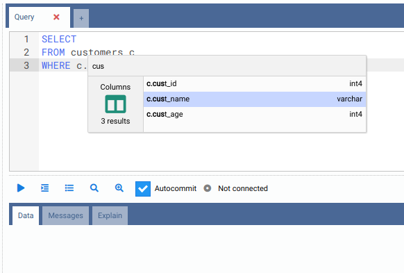
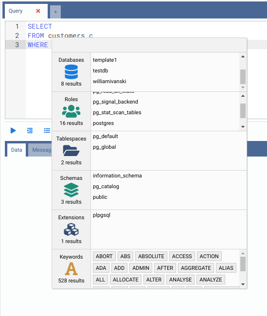
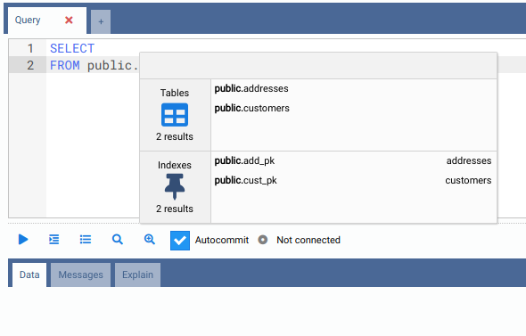

Escritura de consultas SQL
El tipo de pestaña interna más común es la Pestaña de consulta, que contiene los siguientes elementos. Los atajos de teclado que se indican son los predeterminados en Windows/Linux; en macOS, los atajos propios de OmniDB usan Ctrl en lugar de Alt. Todos ellos pueden cambiarse en Configuración > Atajos de teclado.
- 1) Cabecera de la pestaña: puede ver el nombre de la pestaña y, al pasar el ratón, un icono para cerrarla. Mientras hay una consulta en ejecución en la pestaña, verá un indicador giratorio; si termina mientras está trabajando en otra pestaña, se muestra una marca de verificación. Haciendo clic derecho en la pestaña y eligiendo Renombrar pestaña, podrá renombrarla.
- 2) Añadir pestaña: puede añadir rápidamente otra pestaña interna (Pestaña de consulta o Pestaña de consola) haciendo clic en el icono de más.
- 3) Editor SQL: editor SQL completo con resaltado de sintaxis SQL, plegado de
código, Buscar y reemplazar (
Ctrl-FyCtrl-H), una línea de regla vertical (su columna se configura en Configuración > Formato) y un componente de autocompletado, explicado más abajo. Al hacer clic derecho en el editor se ofrecen Copiar, Guardar como snippet y Usar snippet (consulte Snippets). Consulte Atajos de teclado del editor para la lista completa de atajos del editor (selección, multicursor, navegación, plegado, etc.). - 4) Ejecutar: el texto contenido en el editor SQL se ejecutará contra la base de datos
activa actual al hacer clic en este botón (o pulsar
Alt-Q). Si hay algún texto seleccionado en el editor SQL, se ejecuta solo el texto seleccionado. El editor puede contener varias sentencias separadas por punto y coma; se ejecutan una tras otra y la cuadrícula muestra el resultado de la última. Una vez que el comando está en ejecución, se muestra un botón rojo Cancelar, que permite cancelar la ejecución (o pulseAlt-C). - 5) Ejecutar sentencia en el cursor: ejecuta solo la sentencia en la que se encuentra el
cursor, sin necesidad de seleccionarla primero. Con el cursor justo después de un
;, se ejecuta la sentencia siguiente. - 6) Sangrar SQL: este botón da formato a cualquier código SQL escrito en el editor
SQL (atajo
Alt-S), siguiendo el estilo elegido en Configuración > Formato (sangría, estilo de comas, mayúsculas/minúsculas de las palabras clave). - 7) Historial de comandos: todos los comandos ejecutados contra la conexión actual se almacenan en el historial de comandos, al que se puede acceder haciendo clic en este botón. Puede filtrarlo por rango de fechas y por texto para encontrar el comando SQL que necesite.
- 8) Explain (solo PostgreSQL): ejecuta su consulta SQL anteponiendo
EXPLAIN(atajoAlt-W). Los resultados se mostrarán en forma textual y gráfica en la pestaña Explain (consulte Visualización de planes de consulta para más detalles). - 9) Explain Analyze (solo PostgreSQL): igual que el botón Explain, pero ejecuta la
consulta SQL con
EXPLAIN ANALYZE, lo que ejecuta realmente la consulta (atajoAlt-E). - 10) Autocommit (solo PostgreSQL): cuando está activado, toda consulta ejecutada se confirma (commit) en la base de datos. Cuando está desactivado, OmniDB inicia una transacción y, al ejecutar una consulta, la interfaz muestra botones que permiten al usuario hacer Confirmar (Commit) o Deshacer (Rollback). El usuario también puede mantener la transacción abierta y ejecutar otros comandos.
- 11) Estado del backend (solo PostgreSQL): cuando abre una nueva pestaña de consulta, el estado es No conectado, porque OmniDB aún no ha iniciado un backend de PostgreSQL. Al ejecutar la primera consulta, OmniDB inicia un nuevo backend y lo mantiene vinculado a la pestaña de consulta (cada pestaña de consulta obtiene su propio backend). El estado del backend (Inactivo, Ejecutando, Inactivo en transacción, etc.) se mostrará en este campo. Al cerrar la pestaña de consulta, OmniDB finaliza el backend.
- 12) Tipo de archivo de exportación: CSV, TSV, XLSX, JSON, XML o Markdown.
- 13) Exportar datos: al hacer clic en este botón, OmniDB ejecuta la consulta actual y exporta el resultado completo a un archivo del tipo elegido. En la aplicación de escritorio, se abre un diálogo nativo Guardar como para que pueda elegir directamente dónde guardarlo, y OmniDB lo confirma con Archivo exportado a: …. Cuando se ejecuta como OmniDB Server basado en navegador, en cambio, el archivo se escribe primero en la carpeta temporal del servidor, y el área de resultados muestra entonces El archivo está listo. con un enlace Guardar que lo descarga a través del navegador. La codificación CSV/TSV y el delimitador CSV se configuran en Configuración > Exportar.
- 14) Resultados de datos: si la consulta es un
SELECT, se mostrará una cuadrícula con los resultados; la primera columna permanece fija mientras se desplaza horizontalmente, y al pasar el ratón sobre la cabecera de una columna se muestra su nombre completo. Si la consulta es una DML o DDL, se mostrará el mensaje devuelto por el SGBDR. Cuando hay más filas que el primer lote, Obtener más carga el lote siguiente y Obtener todo, el resto. Haga clic derecho en una celda para Copiar o Ver contenido; los valores JSON y XML se muestran con resaltado de sintaxis. - 15) Mensajes (solo PostgreSQL): aquí se mostrará cualquier mensaje (como los generados
por el comando
RAISE NOTICE). - 16) Vista Explain (solo PostgreSQL): muestra un componente completo para ver el plan de ejecución de PostgreSQL en forma textual o gráfica.
El separador entre el editor (con su barra de herramientas) y los resultados puede arrastrarse para dar más espacio a uno u otro.
Confirmación de seguridad para sentencias destructivas
Antes de ejecutar una sentencia que empiece por DROP o TRUNCATE, o un
UPDATE/DELETE sin cláusula WHERE, la pestaña de consulta pide
confirmación (Esta sentencia es destructiva y no se puede deshacer. ¿Ejecutarla de todos modos?, o
Esta sentencia no tiene cláusula WHERE y afectará a TODAS las filas. ¿Ejecutarla de todos modos?).
Es una red de seguridad contra errores involuntarios, no un sistema de permisos: solo examina el comienzo
del texto (después de los comentarios).
Una vez ejecutadas, las pestañas también se guardan en la base de datos de usuario de OmniDB (título y contenido), por lo que la próxima vez que abra OmniDB las verá todas abiertas. Además, cada comando que ejecute en una pestaña de consulta se guarda en el historial de comandos de esa conexión.
Autocompletado SQL
El editor SQL tiene una función que ayuda mucho al crear nuevas consultas: el autocompletado de
código SQL. Abra las sugerencias con Ctrl-Space (Option-Space en macOS). Con
esta función es posible autocompletar columnas contenidas en una tabla referenciada mediante un alias:
escriba el alias, el carácter . y abra luego el autocompletado:

Si el usuario no inicia el autocompletado con el cursor cerca de un alias de tabla, el componente mostrará varias categorías de datos. Al escribir en el cuadro de filtro, los elementos de todas las categorías se filtrarán:

El componente de autocompletado también puede identificar cierta información contextual.
Por ejemplo, si escribe el nombre de un esquema y luego el carácter ., podrá filtrar
únicamente entre los objetos contenidos en ese esquema:

Después de :: (una conversión de tipo de PostgreSQL), solo se ofrecen tipos de datos. Al
elegir una palabra clave también se añade lo que siempre la sigue (por ejemplo, un espacio después de
SELECT, o el paréntesis de apertura después de COALESCE). Las categorías que se
ofrecen (palabras clave, bases de datos, roles, tablespaces, esquemas, extensiones, tablas, vistas, columnas,
funciones, índices) se configuran en Configuración > Autocompletar.
Tenga en cuenta que, para SGBDR distintos